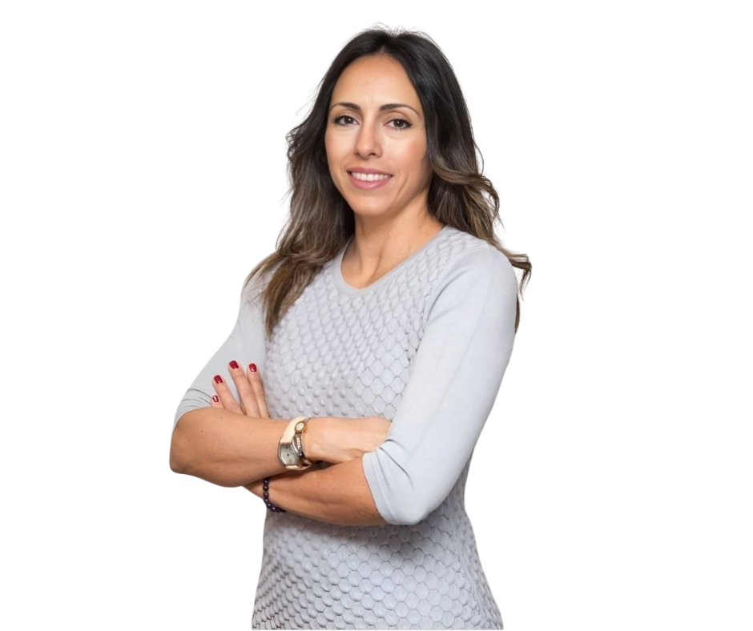
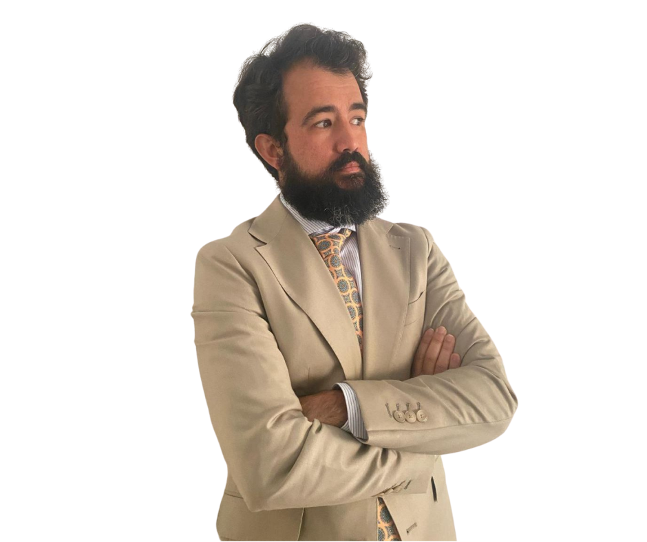

Antonio Javier Gaitán Peña
Abogado colegiado · Adra, Almería
Abogado con formación en Derecho y Abogacía, con especialización en Mediación Civil y Mercantil a través del Consejo General de la Abogacía Española. Actualmente desarrollo mi carrera investigadora como doctorando en Derecho en la UCAM, lo que me permite trabajar con un enfoque riguroso, actualizado y conectado con los últimos avances normativos y jurisprudenciales.
Mi trayectoria combina la práctica profesional diaria con la investigación académica activa: he participado como ponente en congresos internacionales en España e Italia, y he publicado artículos en las principales revistas jurídicas especializadas del país. Esa doble perspectiva —despacho e investigación— es lo que pongo al servicio de cada caso.
Trabajo sobre una idea clara: cada asunto es único y merece una atención que lo refleje. Sin soluciones prefabricadas, sin tecnicismos innecesarios. Transparencia en cada paso, para que entiendas el proceso y las decisiones que se toman.
Cómo trabajamos
Tres principios que guían cada decisión en el despacho, desde la primera llamada hasta el cierre del caso.
Transparencia total
Antes de empezar sabes exactamente lo que va a costar y lo que puedes esperar. Sin letra pequeña, sin sorpresas. Si tu caso no tiene solución viable, te lo decimos.
Cercanía y disponibilidad
No eres un número de expediente. Cogemos el teléfono, respondemos los mensajes y te explicamos cada paso con un lenguaje que se entiende.
Rigor y experiencia
Práctica profesional combinada con investigación académica activa. Esa doble perspectiva la ponemos al servicio de tu caso.
Colaboradores
Profesionales con los que trabajamos para ofrecer el mejor servicio en cada área especializada.

Anahí Luz Haleblian
Derecho de Extranjería
Socia fundadora de Legal Expertise Acosta & Vinyes, S.L.P., especializada en Derecho de Extranjería. Más de 20 años de experiencia en España y Argentina. Asesoramiento en español, inglés y francés.
Ver perfil profesional →

Pastor Antonio Cañas Pérez
Derecho Penal, Familia y Administrativo
Abogado colegiado en Córdoba y Tenerife, con más de diez años de experiencia en Derecho Penal, Familia y Administrativo. Atiende en español, inglés y catalán.
Ver perfil profesional →
¿En qué te puedo ayudar?
Áreas en las que me especializo. Pulsa sobre cualquier tarjeta para conocer todos los detalles.
Ley de Segunda Oportunidad
Cancela tus deudas y empieza de cero. Analizamos si te aplica y tramitamos el proceso completo.
Saber más →Derecho de Familia
Divorcios, custodia, pensiones y convenios reguladores. Con o sin acuerdo entre las partes.
Saber más →Desahucios
Recuperamos tu inmueble con rapidez y firmeza, sea por impago, precario o expiración de contrato.
Saber más →Accidentes de Tráfico
Reclamamos la indemnización que te corresponde frente a la aseguradora, sin que tengas que preocuparte de nada.
Saber más →